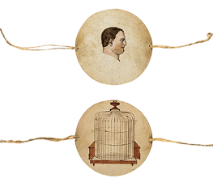
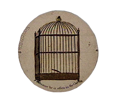
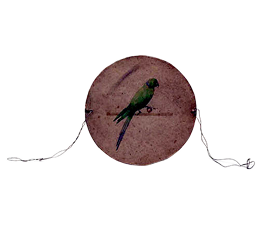

1800-1900 - L'INVENZIONE DELLO STUPORE
TRAUMATROPIO
In un'epoca di grandi scoperte scientifiche, il Taumatropio apparve nelle case europee intorno al 1824. Non era solo un semplice passatempo, ma una vera e propria sfida alla percezione umana. Il suo nome spiega già tutto: deriva dal greco thauma (meraviglia) e tropos (volgere), ovvero "il giro delle meraviglie".
LA MAGIA DELLA SCIENZA
Il gioco è di una semplicità disarmante: un dischetto di cartone con due disegni diversi sulle due facce e due cordicelle attaccate ai lati.
- L'azione: Facendo ruotare velocemente il disco tra le dita, le due immagini si fondono magicamente in una sola davanti agli occhi dello spettatore.
- Il segreto: Il Taumatropio sfrutta il principio della persistenza della visione. Poiché l'occhio umano trattiene un'immagine per una frazione di secondo dopo che è scomparsa, se la seconda immagine appare abbastanza velocemente, il cervello le sovrappone in un'unica composizione.



PICCOLE STORIE IN UN DISCO
- L'uccellino e la gabbia: Il design più iconico. Da un lato un uccellino, dall'altro una gabbia vuota. Ruotando, l'uccellino sembrava prigioniero tra le sbarre.
- Il vaso e i fiori: Un vaso spoglio che improvvisamente si riempiva di petali colorati.
- Il cavaliere e il cavallo: Un uomo da una parte e un destriero dall'altra che, uniti dal movimento, davano vita a una galoppata.

UN SUCCESSO TRA SCIENZA E STORIA
Sebbene oggi sembri elementare, nell'Ottocento il Taumatropio era all'avanguardia. Fu reso popolare dal dottor John Ayrton Paris, che lo utilizzava per spiegare i principi della visione ai suoi colleghi scienziati. In breve tempo, però, divenne il regalo preferito dei bambini della classe media, venduto in eleganti scatole contenenti serie di dischi intercambiabili.
